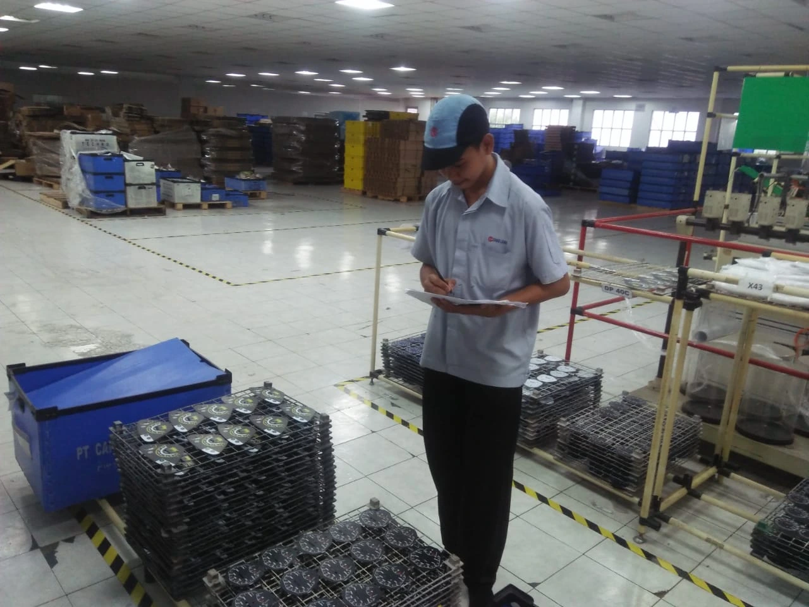

Shalom Dano
Manufacturing Operations Professional
I'm focused on
Information Technology graduate with approximately four years of experience in manufacturing energy operations, operational planning, and administrative management. Combining industrial knowledge with digital skills to improve operational efficiency, streamline reporting, and support data-driven decisions.
Shalom Natanael Dano
Manufacturing Operations & Energy Planning
Get to Know Me
Bridging Manufacturing Operations with Digital Solutions
I am an Information Technology graduate with approximately four years of professional experience in the manufacturing industry, particularly in energy operations, operational planning, and administrative management. Throughout my career, I have developed a strong understanding of industrial operations, data management, and cross-functional coordination.
With a combination of industrial experience and technical knowledge, I am passionate about improving operational efficiency through structured reporting, data analysis, and digital automation. I continuously seek opportunities to learn, adapt, and contribute to more effective and data-driven business processes.
4+
Years Industry Experience
3.90
GPA Bachelor's Degree
12+
Completed Projects
Specialization
Manufacturing Operations & Energy Planning
Experience Level
Senior Officer
Education
Bachelor's Degree in Information Technology
Languages
Indonesian, English
Skills
Combining manufacturing industry experience with technical expertise in operational planning, data automation, and information technology.
Manufacturing Operations & Data Automation
Microsoft Excel & Reporting
90%
Operational reporting, data management, spreadsheet analysis,
and executive report preparation.
Excel VBA Automation
85%
Automated reporting, attendance processing, data extraction,
file management, and workflow automation.
Operational Planning
85%
Operational scheduling, monitoring, coordination,
and manufacturing activity reporting.
Energy Operations
80%
Understanding of energy center operations, utility processes,
water balance, and industrial reporting.
SAP & Data Management
70%
Experience with SAP-based operational activities
and structured data management.
Information Technology & Technical Engineering
HTML & CSS
80%
Building responsive web interfaces and structured web layouts.
PHP & Laravel
75%
Developing web applications using Laravel,
MVC architecture, and backend functionality.
MySQL & Database Management
75%
Database design, relational data management,
SQL queries, and data organization.
AutoCAD 2D Technical Drawing
70%
2D technical drawing, engineering drawing interpretation,
dimensioning, and mechanical drawing fundamentals.
Mechanical Manufacturing & Machining
75%
Practical training in conventional lathe machining,
milling, welding, grinding, precision measurement,
and mechanical assembly.
Resume
A professional background in manufacturing operations, energy planning, operational administration, and data automation, supported by an academic foundation in Information Technology and technical manufacturing training.
Professional Summary
Information Technology graduate with approximately four years of experience in the manufacturing industry, specializing in operational planning, energy management administration, data management, and reporting automation. Experienced in developing Excel VBA solutions to streamline administrative processes, automate operational reports, and support data-driven decision-making. Combines industrial experience with technical knowledge in information systems and manufacturing technology.
Contact Information
- Bekasi, West Java, Indonesia
- shald030902@gmail.com
- +62 877-8231-0309
- LinkedIn Profile
Technical Skills
Information Technology & Digital Skills
- Microsoft Office (Excel, Word, PowerPoint, Outlook)
- Microsoft Excel Advanced Formulas
- Excel VBA & Macro Automation
- Data Management & Reporting
- AI Productivity Tools
- Web Development (PHP & Laravel)
- MySQL Database Management
Manufacturing & Mechanical Engineering
- Industrial Manufacturing Fundamentals
- Basic Machining Processes (Turning, Milling & Grinding)
- Basic CNC Machining Concepts
- Technical Drawing & Engineering Drawing Interpretation
- AutoCAD 2D Drafting
- Work Preparation & Production Planning
Industrial Electronics & Automation
- Industrial Electronics Fundamentals
- Industrial Electrical Systems
- Basic PLC (Programmable Logic Controller)
- Basic Pneumatic Systems
- Basic Hydraulic Systems
- Electro-Pneumatic & Electro-Hydraulic Fundamentals
Operational & Energy Management
- Manufacturing Operations
- Operational Planning & Coordination
- Energy Data Monitoring & Reporting
- Energy Cost Calculation
Professional Experience
Officer – Energy Division
April 2022 – Present
PT Fajar Surya Wisesa Tbk (FajarPaper)
Working in the Energy Division of a manufacturing company, supporting energy management, operational planning, administrative activities, and data reporting.
- Supported operational planning and administrative activities to maintain effective coordination across Energy Division operations.
- Managed and organized operational data to support reporting, monitoring, and departmental activities.
- Developed Excel VBA macros to automate administrative data compilation and reporting processes.
- Developed macro-based solutions for production data extraction and daily report preparation.
- Automated energy imbalance data extraction and compilation to support operational monitoring and analysis.
- Developed nested IF formulas in Microsoft Excel to calculate energy costs based on operational fuel consumption.
Internship Experience
Production Support Intern
December 2018 – March 2019
PT Schneider Electric Indonesia
Completed an industrial internship in production support, gaining initial exposure to manufacturing operations, production processes, and industrial working environments as part of the Industrial Work Practice program.
Industrial Production Support Intern
June 2018 – September 2018
PT Chao Long Motor Part Indonesia
Participated in industrial production support activities as part of the Industrial Electronics program at SMKN 1 Cikarang Selatan. Developed professional discipline, responsibility, teamwork, and an understanding of manufacturing working environments.
Education
Bachelor of Information Technology
September 2022 – November 2026
Universitas Bina Sarana Informatika
Studied Information Technology with an academic focus on information systems, database management, software development, and web-based applications.
Technical Training Program – Industrial Manufacturing Technology
November 2020 – December 2021
Politeknik Industri ATMI Cikarang
Received technical training in basic machining, industrial electrical systems, PLC, pneumatics, hydraulics, and technical drawing.
Industrial Electronics
SMKN 1 Cikarang Selatan
Vocational education focused on industrial electronics and technical fundamentals.
Courses & Certifications
AI for Office Work Course Completion Certificate
Microsoft Excel Course Completion Certificate
Microsoft PowerPoint Course Completion Certificate
Microsoft Word Course Completion Certificate
Microsoft Outlook Course Completion Certificate
Certificates & Training
Professional certifications and technical training that demonstrate my competencies in information technology, software development, industrial automation, and manufacturing technology.
Professional skills
& technical certifications
A collection of professional certifications and training programs that reflect my continuous learning journey in technology, digital productivity, and industrial manufacturing.
View All CertificatesBNSP Program Analysis
Professional certification in Program Analysis, demonstrating competency in analyzing program requirements, logic, and software development processes.
Microsoft Word
Training and certification in document processing, professional document formatting, and administrative documentation using Microsoft Word.
Microsoft PowerPoint
Training and certification in presentation development, slide design, visual communication, and professional presentation preparation.
Microsoft Excel
Training and certification in spreadsheet management, data processing, formulas, and reporting using Microsoft Excel.
Experience & Activities
A collection of professional experiences, technical projects, and organizational activities that reflect my skills, learning journey, and personal development.



Outdoor Activities & Adventures
Beyond my professional career, I actively participate in outdoor activities and mountain expeditions. These experiences have helped me develop leadership, teamwork, responsibility, and adaptability in challenging environments.


Get In Touch
I am open to professional opportunities, collaborations, and discussions related to information technology, operational planning, industrial operations, and digital transformation.
Contact Information
Feel free to reach out to me for professional inquiries, career opportunities, project collaborations, or networking. I would be happy to connect with you.
Location
Cikarang, West Java, Indonesia
Phone / WhatsApp
Email Address
Let's Work Together
Have an opportunity, project idea, or professional inquiry? Send me a message and let's start a conversation.